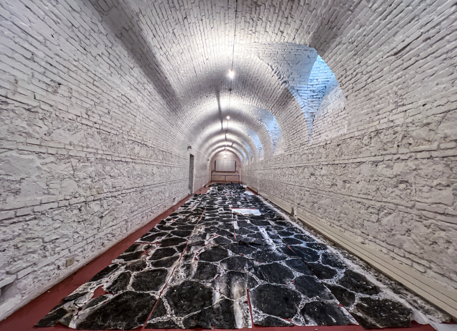
✧Descripition✧
*The Wall and the Road* is an installation combining *The Wall* (1990–1991) and *The Road* (2024). *The Road* was created during Xu Bing’s residency at the American Academy in Rome and is a 24-meter-long rubbing drawing of the ancient Appian Way. The artwork was produced with students and cultural institutions in Rome and Hong Kong. Xu Bing used traditional rubbing techniques with Xuan paper and ink to capture the texture of the historic stone road. The work preserves traces of the Appian Way’s centuries-old history. This technique also connects the artwork with *The Wall*, which records part of the Great Wall of China.
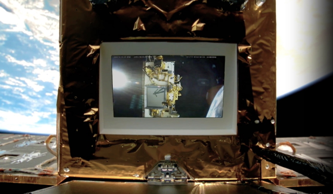
✧Descripition✧
This satellite is produced by the Xu Bing Studio and Beijing Wanhu Chuangshi Co. Before SCA-1, among the thousands of satellites flying above us today, there are scientific satellites, meteorological, communication, and military ones, but an "art satellite" has been missing.Xu Bing set the concept of this satellite as follows: "By inviting artists to participate in the Space Art Residency Program, we will share the rights and interests of using this satellite and create our own works. It is an attempt to build a dialogue between space technology and contemporary art, extending our thinking to a broader space in exploring this highly 'futuristic' field.
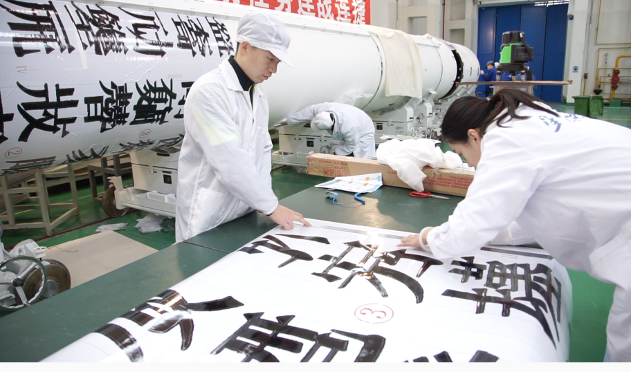
✧Descripition✧
Launched by Xu Bing and i-Space, Xu Bing Tianshu Rocket is an invaluable contribution to the evolving realm of space art. This unprecedented “art rocket” pays homage to the achievements of Chinese astronauts and embodies the innovative spirit that resonates in Xu Bing’s works. Painted with invented characters found in the archetypal Book from the Sky (1988), the rocket acts as a vessel that continues to question the arbitrary nature of language and its limitations. “After completing the propulsion task, the sub-stage arrow will separate from the load compartment and return to the ground. These ‘pseudo-characters’ [represent] a unique.
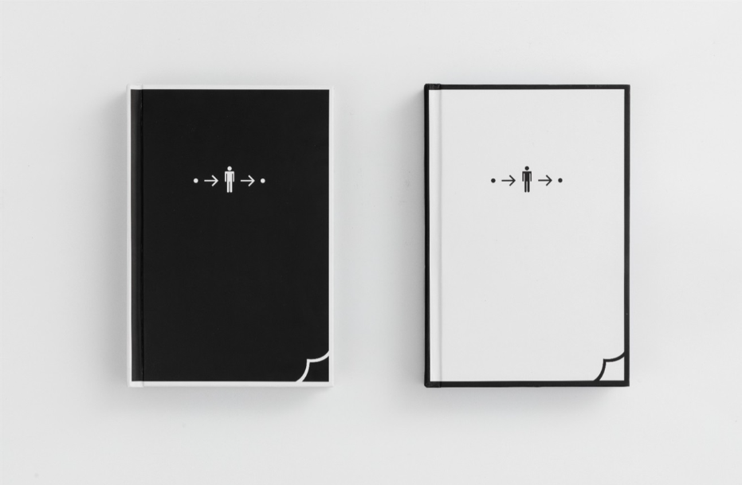
✧Descripition✧
ook (2014 Edition)
Book from the Ground Pop-up Book is based on Xu Bing’s Book from the Ground: From Point-to-Point, which includes all the classic expression techniques of three-dimensional books, such as turn, rotate, pull rod, shaft rod, etc. The clever combination of emojis and three-dimensional structure, without using a single traditional word, reflects a vibrant interactivity, making this universally readable book all the more fascinating and engaging. Book from the Ground Pop-up Book - Day (2014) Dimensions: 17.9 x 26.2 x 4.1 cm Book from the Ground Pop-up Book - Night (2014) Dimensions: 17.9 x 26.2 x 4.1 cm Material: 128g, 230g specialty paper with non-acid latex.
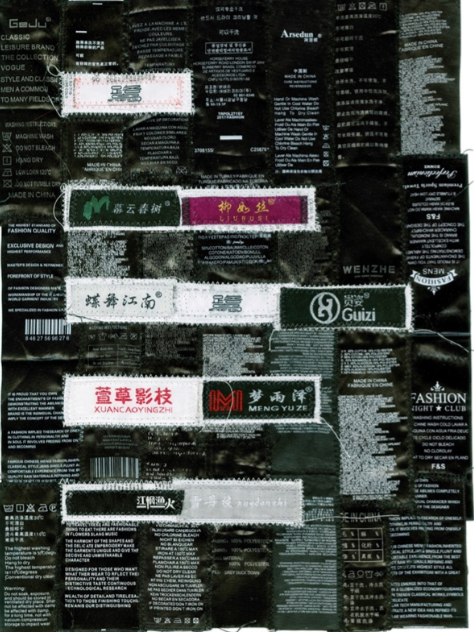
✧Descripition✧
The Seven-Character Poetry
Medium: Clothing label and programming writing Dimensions of each item: 35.7 x 26.3 x 12 cm Dimensions of packaging: 41 × 28.5 × 3.5 cm Exhibition: Museum of Art Pudong, Shanghai, 2021-2022. TOKYO Gallery + BTAP, Beijing, 2021 Starting from 2015, Xu Bing has amassed an extensive collection of clothing brand labels from numerous private enterprises. When brought together, these labels reflect the history of their entrepreneurship, development, bottlenecks, transformations, and acquisitions. Furthermore, we can perceive the brand names as carriers of people’s hopes and aspirations for the future. For this project, a “poem writing software” has been developed.
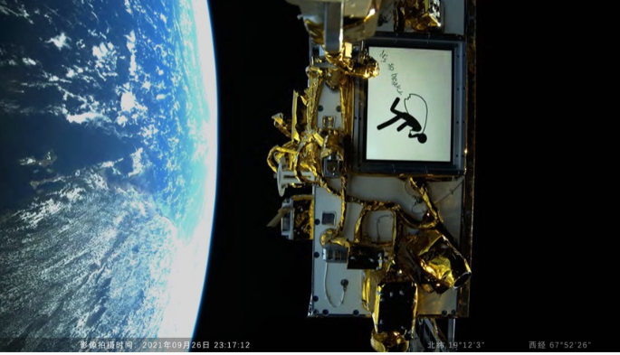
✧Descripition✧
Cosmic Reflections
Media: Mixed media, Video installation Time length: 2'8'' now (work still in progress) Exhibition: Red Brick Art Museum, Beijing, 2021-2022. Xie Zilong Photography Museum, Changsha, 2022 By utilizing ground-transmitted images and a self-directed satellite camera, Xu Bing integrates man-made pictures with those captured from an orbit, creating a captivating animation that blurs the boundaries between Earth and space. Imagine the “standard person'' traversing outer space, carrying a bundle in tow while words spill out of their baggage. As the satellite orbits around the earth 15 times each day, the language depicted in the animated spills changes in sychronization.
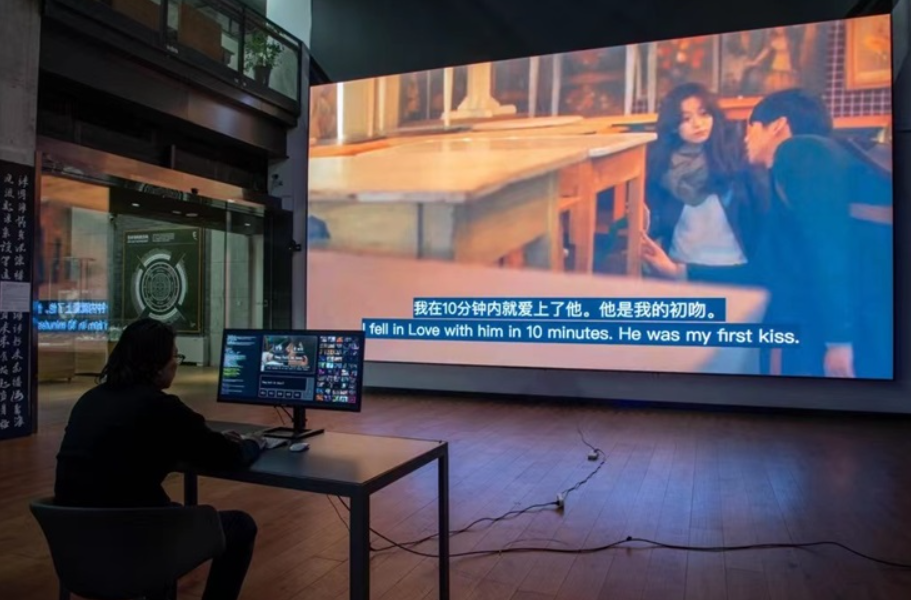
✧Descripition✧
(AI-IF) Project
This project works closely with artificial intelligence scientists to develop a real-time feature film production artificial intelligence system that involves no human production personnel (directors, screenwriters, photographers, or actors, etc.). In this interactive exhibit, the audience can input their preferred film genre (such as science fiction, crime, romance, etc.) and customize the narrative plot or style of the movie by entering keywords or sentences, resulting in a unique AI-generated movie. This project aims to pursue an element that transcends human creation and fulfills a demand that is absent in traditional film. Its concept emerges from human biases.
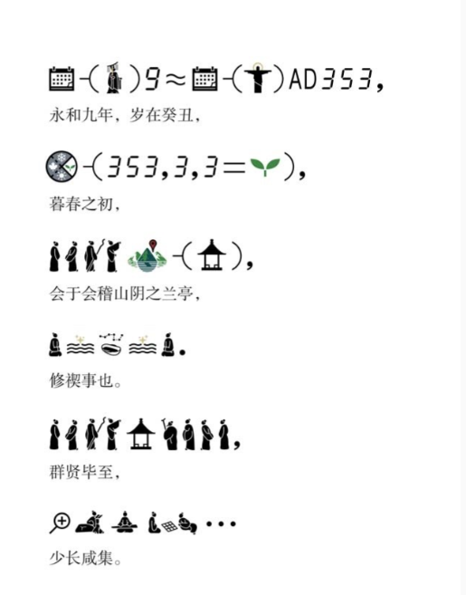
✧Descripition✧
Reading Image
Since 2004, Xu Bing has sought to create a book comprehensible to all human beings using solely public signs. Although it has been more than a decade since the start of this project, it is ever evolving. With the growing globalization of “graphic expression” brought by digital computation, new forms of expressions such as emojis and memes have emerged, particularly popular among young generations. These contemporary signs, seemingly disconnected from ancient traditions, now find their place in the main exhibition hall of the Palace Museum. While the audience may initially struggle to adjust to the translation of “兰亭集序” in emojis and memes, the resulting sense.
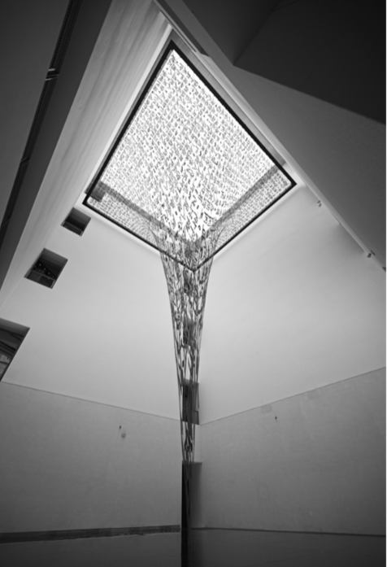
✧Descripition✧
The initial challenge of “seeing” arises when viewers position themselves beneath the work. In addition to the reversed text, the contortions and overlaps render the characters in the exhibition hall difficult to read. Simultaneously, the mirror on the floor embeds the text into a warped wormhole model which interconnects the two inverted spaces. While the reversed characters become legible in the mirror image, the audience is still unable to see the work in its entirety. The combination of the installation and the museum space seems to present a theatrically inviting quality. As visitors ascend to higher floors and alter their viewing perspectives, the distorted characters appear increasingly familiar.
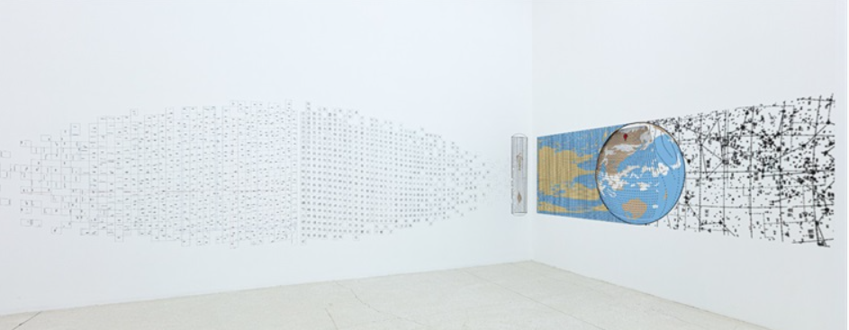
✧Descripition✧
Research Display
This is a screenshot of an artwork page titled "Where Are You?" showing a long horizontal wall collage in a white gallery. The work appears to be a dense accumulation of small black-and-white photographs, drawings and texts arranged like an archive or mind-map across wall. The website sidebar lists projects like "The Wall and the River" and "To Map Soils". It is a research-based practice, combining art, cartography and storytelling. The installation functions as visual essay about place, displacement and memory. It uses gallery wall as page, inviting slow reading and connecting personal histories with larger geopolitics.
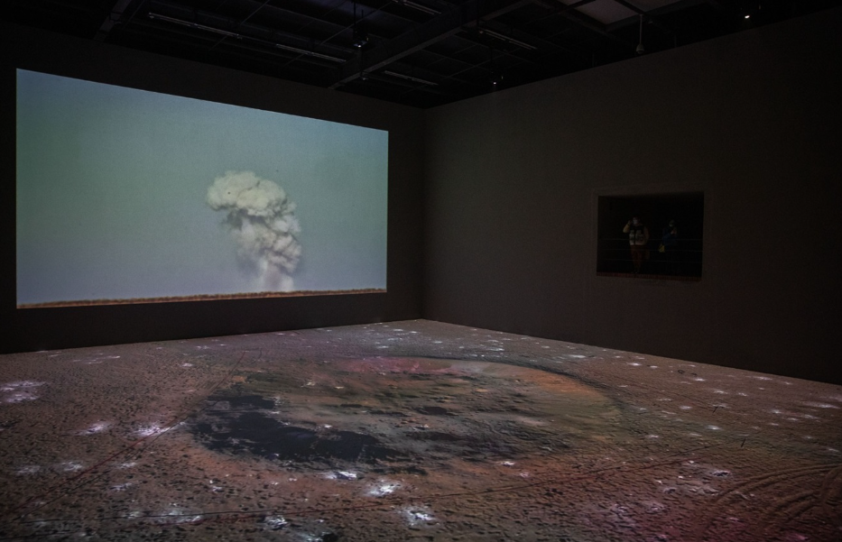
✧Descripition✧
Cloud Installation
This is an immersive dark room installation with a large projection on wall showing a white mushroom cloud or smoke plume rising in slow motion above a dark earthy ground. The floor is covered with dark soil-like material and a circular depression. The atmosphere is ominous, silent and meditative. The work evokes nuclear explosion, environmental disaster or volcanic eruption. The small scale of projection against dark void creates sense of isolation and awe. It uses light, sound and earth to create ecological warning. Viewer becomes witness to catastrophe, experiencing beauty and terror simultaneously in a contemplative space.
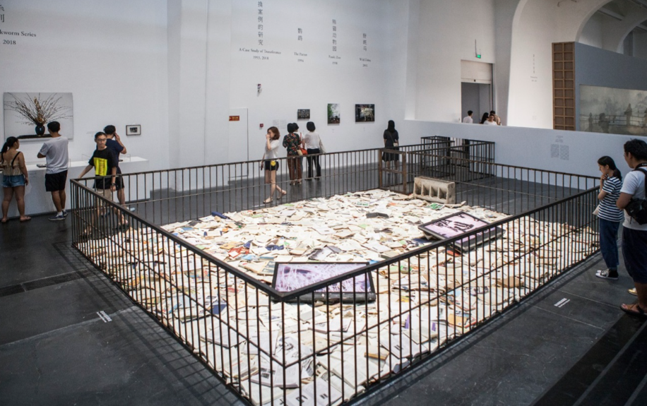
✧Descripition✧
Times Overlap Museum Installation*
This is a large-scale conceptual installation inside a white cube gallery. A low black iron fence encloses a rectangular area completely filled with thousands of crumpled white papers, documents and printed images. Some framed photos lie on top. Visitors stand around fence observing, not entering. The work looks like an archive, a crime scene or a mass grave of memories. It speaks about information overload, history, migration or loss. The fence creates barrier between viewer and material, making it both protected and imprisoned. It transforms gallery into memorial space questioning what we preserve and what we discard
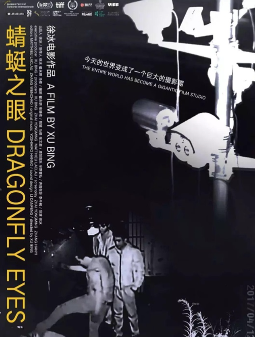
✧Descripition✧
I’ve wanted to make a film from surveillance footage since 2013, but I had no access to the necessary resources. Since 2015, surveillance cameras in China have been linked to the cloud database: countless surveillance recordings have been streamed online. So I took up the project again. I collected a huge amount of footage and tried to use these fragments of reality to tell a story. With no human agency operating them, surveillance cameras produce fascinating footage round the clock. Ineffably silent, these cameras record incessantly. Sometimes they record images that are beyond logical understanding, captured in one mad, fleeting instant. When these seemingly random yet intricately connected clips are assembled.
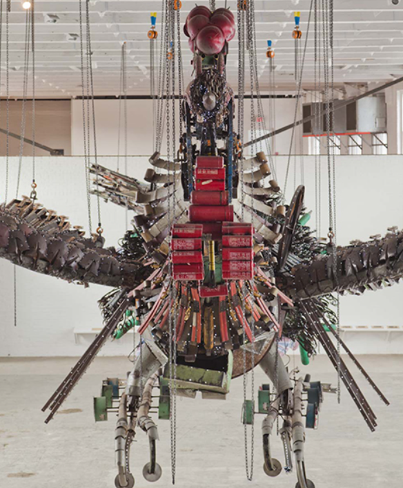
✧Descripition✧
The magnificent installation of Xu Bing's Phoenix, a pair of two Chinese phoenixes (feng and huang), consists of thousands of abandoned materials and workers' tools that Xu Bing collected from construction sites in Beijing. While fenghuang is traditionally associated with rebirth after suffering and rising from ash, Xu Bing's Phoenix can be seen to signify the cycle of the painstaking development and renewal inherent in the process of urbanization. Furthermore, Phoenix recognizes the efforts of ordinary workers and draws attention to urban topics such as environmental crises and labor conditions. When Phoenix traveled to Shanghai (2010), MASS MoCA (2012), New York (2014), and the 56th Venice Biennale.
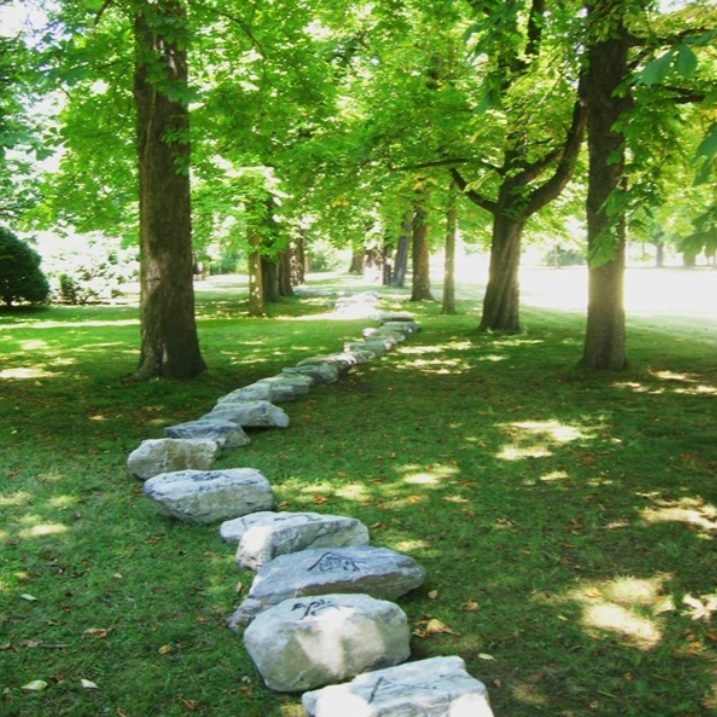
✧Descripition✧
Land Art*
This land art work shows a long winding line of large irregular white limestone boulders placed directly on green grass under mature trees in a public park. The stones are roughly same size, placed with small gaps, creating a natural pathway that disappears into distance. Sunlight filters through leaves creating dappled shadows. It is a classic example of minimalist land art where artist intervenes minimally in nature. The work explores relationship between human order and organic chaos, permanence of stone versus ephemerality of grass and light. It invites viewers to walk alongside, to experience landscape as sculpture and time as material.
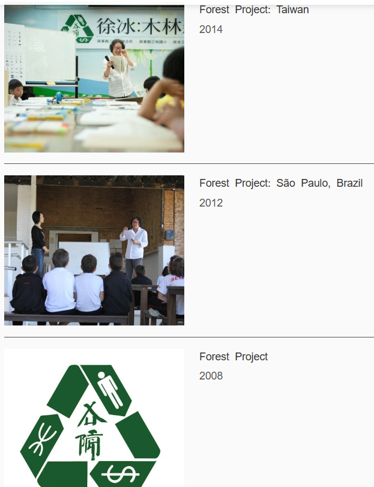
✧Descripition✧
The Forest Project is an experiment of creating a self-sustaining system that will move funds from wealthy areas to impoverished areas for planting trees. Its feasibility is based on the following principles: firstly, leveraging free online services such as auction and sales hosting, money transfers, and even online teaching to minimize costs; secondly, ensuring benefits for all participants in the project; thirdly, leveraging regional economic discrepancies (for example, the cost of a subway ride in New York, which is $2.50, can plant ten trees in Kenya).
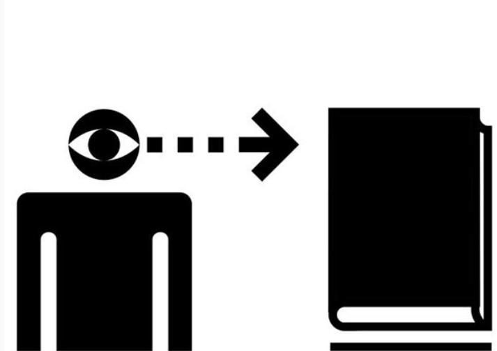
✧Descripition✧
Xu Bing’s Book from the Ground, which he has been working on since 2003, is an ongoing exploration of communication and language. The project involves compiling symbols and pictograms from the public sphere and using them to create a book exclusively written in visual language. The uniqueness of Book from the Ground lies in its accessibility to any reader belonging to contemporary society. Regardless of one’s cultural or linguistic background, the book’s material can be interpreted and understood due to the universal nature of its visual symbols. This eliminates the need for translation and can be published anywhere. For the Book fom the Ground installation, Xu Bing recreates working environment of studio.
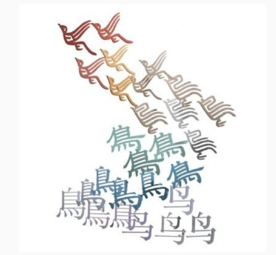
✧Descripition✧
The work is mainly comprised of over 400 calligraphic variants of the Chinese character “niao”, meaning bird, carved in colored acrylic and laid out in a shimmering track that rises from the floor into the air. On the gallery floor Chinese characters in the “simplified style” script popularized during the Mao era are used to write out the dictionary definition for niao. The bird/niao characters then break away from the confines of the literal definition and take flight through the installation space As they rise into the air, the characters “de-evolve” from the simplified system to standardized Chinese text and the finally to the ancient Chinese pictograph hasde upon a bird’s actual appearance.
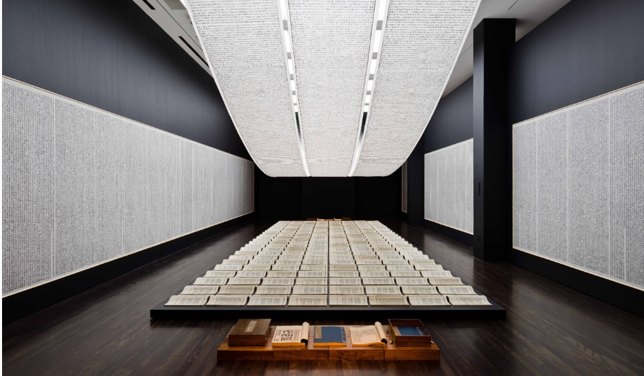
✧Descripition✧
Books
Produced over the course of four years, this four-volume treatise features thousands of meaningless characters resembling Chinese. Each character was meticulously designed by the artist in a Song-style font that was standardized by artisans in the Ming dynasty. In this immersive installation, the artist hand-carved over four thousand moveable type printing blocks. The painstaking production process and the format of the work, arrayed like ancient Chinese classics, were such that the audience could not believe that these exquisite texts were completely illegible. The work simultaneously entices and denies the viewer’s desire to read the work.As Xu Bing has noted, the false characters.
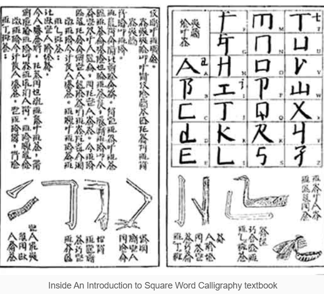
✧Descripition✧
Square Word Calligraphy
Xu Bing has designed a calligraphic system known as Square Word Calligraphy in which English words come to resemble Chinese characters. Like a linguistic breeder, the artist combines Chinese calligraphy with English writing to create a new “species”. However, it is different from the nonsensical characters in Book from the Sky which breed feelings of suspicion and confusion in the viewer. Upon reading Square Word Calligraphy, these conflicts are resolved with the immediate revelation that the work contains “real” text. Through this praocess, Xu Bing has introduced a novel Eastern art form into the Western cultural sphere. It transcends established notions of Chinese and English.